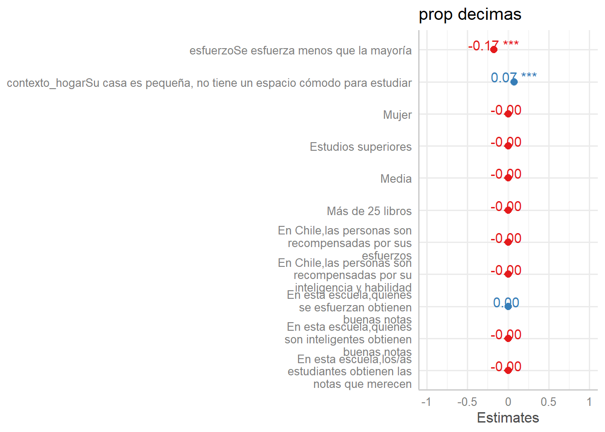

boundary (singular) fit: see help('isSingular')Linear mixed model fit by REML ['lmerMod']
Formula: prop_decimas ~ 1 + esfuerzo + contexto_hogar + dependencia +
genero + educ_max + nivel_estudiante + libros_hogar + p1_1 +
p1_2 + p2_1 + p2_2 + p2_3 + (1 | id_estudiante)
Data: datos
REML criterion at convergence: -1842.8
Scaled residuals:
Min 1Q Median 3Q Max
-3.1143 -0.5985 -0.0305 0.5985 5.8398
Random effects:
Groups Name Variance Std.Dev.
id_estudiante (Intercept) 0.00000 0.0000
Residual 0.01422 0.1192
Number of obs: 1376, groups: id_estudiante, 344
Fixed effects:
Estimate
(Intercept) 3.036e-01
esfuerzoSe esfuerza menos que la mayoría -1.750e-01
contexto_hogarSu casa es pequeña, no tiene un espacio cómodo para estudiar 6.773e-02
dependenciaColegio Municipal -2.178e-15
dependenciaColegio Privado -1.143e-15
generoMujer -2.259e-15
educ_maxEstudios superiores -1.435e-15
nivel_estudianteMedia -1.283e-15
libros_hogarMás de 25 libros 1.553e-16
p1_1 -8.307e-16
p1_2 -2.003e-15
p2_1 -1.133e-15
p2_2 -2.136e-15
p2_3 -3.225e-15
Std. Error
(Intercept) 2.461e-02
esfuerzoSe esfuerza menos que la mayoría 6.429e-03
contexto_hogarSu casa es pequeña, no tiene un espacio cómodo para estudiar 6.429e-03
dependenciaColegio Municipal 1.018e-02
dependenciaColegio Privado 7.383e-03
generoMujer 6.656e-03
educ_maxEstudios superiores 6.988e-03
nivel_estudianteMedia 6.666e-03
libros_hogarMás de 25 libros 9.323e-03
p1_1 4.567e-03
p1_2 4.755e-03
p2_1 4.313e-03
p2_2 5.006e-03
p2_3 4.650e-03
t value
(Intercept) 12.34
esfuerzoSe esfuerza menos que la mayoría -27.22
contexto_hogarSu casa es pequeña, no tiene un espacio cómodo para estudiar 10.54
dependenciaColegio Municipal 0.00
dependenciaColegio Privado 0.00
generoMujer 0.00
educ_maxEstudios superiores 0.00
nivel_estudianteMedia 0.00
libros_hogarMás de 25 libros 0.00
p1_1 0.00
p1_2 0.00
p2_1 0.00
p2_2 0.00
p2_3 0.00
Correlation matrix not shown by default, as p = 14 > 12.
Use print(x, correlation=TRUE) or
vcov(x) if you need itoptimizer (nloptwrap) convergence code: 0 (OK)
boundary (singular) fit: see help('isSingular')
========================================================================================
Model 1
----------------------------------------------------------------------------------------
(Intercept) 0.30 ***
(0.02)
esfuerzoSe esfuerza menos que la mayoría -0.18 ***
(0.01)
contexto_hogarSu casa es pequeña, no tiene un espacio cómodo para estudiar 0.07 ***
(0.01)
dependenciaColegio Municipal -0.00
(0.01)
dependenciaColegio Privado -0.00
(0.01)
generoMujer -0.00
(0.01)
educ_maxEstudios superiores -0.00
(0.01)
nivel_estudianteMedia -0.00
(0.01)
libros_hogarMás de 25 libros 0.00
(0.01)
p1_1 -0.00
(0.00)
p1_2 -0.00
(0.00)
p2_1 -0.00
(0.00)
p2_2 -0.00
(0.01)
p2_3 -0.00
(0.00)
----------------------------------------------------------------------------------------
AIC -1810.76
BIC -1727.12
Log Likelihood 921.38
Num. obs. 1376
Num. groups: id_estudiante 344
Var: id_estudiante (Intercept) 0.00
Var: Residual 0.01
========================================================================================
*** p < 0.001; ** p < 0.01; * p < 0.05
boundary (singular) fit: see help('isSingular')Linear mixed model fit by REML ['lmerMod']
Formula: decimas_asignadas ~ 1 + esfuerzo + contexto_hogar + dependencia +
genero + educ_max + nivel_estudiante + libros_hogar + p1_1 +
p1_2 + p2_1 + p2_2 + p2_3 + (1 | id_estudiante)
Data: datos
REML criterion at convergence: 4511.3
Scaled residuals:
Min 1Q Median 3Q Max
-3.0996 -0.6028 -0.0001 0.6078 5.7464
Random effects:
Groups Name Variance Std.Dev.
id_estudiante (Intercept) 0.000 0.000
Residual 1.468 1.211
Number of obs: 1388, groups: id_estudiante, 347
Fixed effects:
Estimate
(Intercept) 2.892694
esfuerzoSe esfuerza menos que la mayoría -1.734870
contexto_hogarSu casa es pequeña, no tiene un espacio cómodo para estudiar 0.671470
dependenciaColegio Municipal 0.010574
dependenciaColegio Privado -0.070467
generoMujer 0.047354
educ_maxEstudios superiores 0.007984
nivel_estudianteMedia 0.026578
libros_hogarMás de 25 libros -0.043459
p1_1 -0.024552
p1_2 0.047942
p2_1 0.014924
p2_2 -0.022223
p2_3 0.019211
Std. Error
(Intercept) 0.249021
esfuerzoSe esfuerza menos que la mayoría 0.065032
contexto_hogarSu casa es pequeña, no tiene un espacio cómodo para estudiar 0.065032
dependenciaColegio Municipal 0.103380
dependenciaColegio Privado 0.074274
generoMujer 0.067259
educ_maxEstudios superiores 0.070737
nivel_estudianteMedia 0.067283
libros_hogarMás de 25 libros 0.093739
p1_1 0.045667
p1_2 0.047523
p2_1 0.043474
p2_2 0.050617
p2_3 0.046350
t value
(Intercept) 11.616
esfuerzoSe esfuerza menos que la mayoría -26.677
contexto_hogarSu casa es pequeña, no tiene un espacio cómodo para estudiar 10.325
dependenciaColegio Municipal 0.102
dependenciaColegio Privado -0.949
generoMujer 0.704
educ_maxEstudios superiores 0.113
nivel_estudianteMedia 0.395
libros_hogarMás de 25 libros -0.464
p1_1 -0.538
p1_2 1.009
p2_1 0.343
p2_2 -0.439
p2_3 0.414
Correlation matrix not shown by default, as p = 14 > 12.
Use print(x, correlation=TRUE) or
vcov(x) if you need itoptimizer (nloptwrap) convergence code: 0 (OK)
boundary (singular) fit: see help('isSingular')
========================================================================================
Model 1
----------------------------------------------------------------------------------------
(Intercept) 2.89 ***
(0.25)
esfuerzoSe esfuerza menos que la mayoría -1.73 ***
(0.07)
contexto_hogarSu casa es pequeña, no tiene un espacio cómodo para estudiar 0.67 ***
(0.07)
dependenciaColegio Municipal 0.01
(0.10)
dependenciaColegio Privado -0.07
(0.07)
generoMujer 0.05
(0.07)
educ_maxEstudios superiores 0.01
(0.07)
nivel_estudianteMedia 0.03
(0.07)
libros_hogarMás de 25 libros -0.04
(0.09)
p1_1 -0.02
(0.05)
p1_2 0.05
(0.05)
p2_1 0.01
(0.04)
p2_2 -0.02
(0.05)
p2_3 0.02
(0.05)
----------------------------------------------------------------------------------------
AIC 4543.34
BIC 4627.11
Log Likelihood -2255.67
Num. obs. 1388
Num. groups: id_estudiante 347
Var: id_estudiante (Intercept) 0.00
Var: Residual 1.47
========================================================================================
*** p < 0.001; ** p < 0.01; * p < 0.05